项目概览
Project Air Detector,
From Data to Insights
Smart Hardware Networking UX
B+C Experience Design Portfolio
Guangzhou, China (Open to Remote)
AI-Driven Health Assistant
Data Visualization System
Multi-State Component Library
AIGC Workflow Integration
项目背景
空气检测仪
智能配网与数据可视化体验重构
全栈主设｜ C端体验 | 交互重构
2022-2023（东南亚市场）
Figma | AIGC 辅助生成 | 交互原型
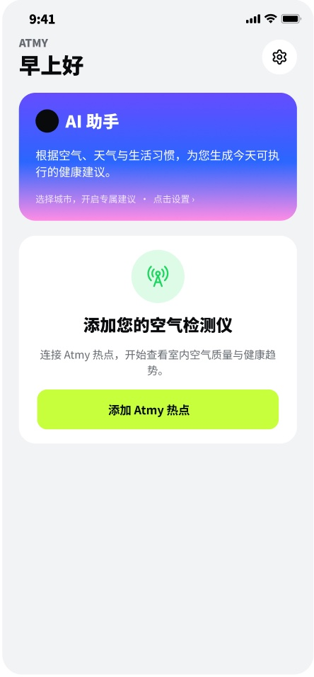
关键问题
Air Detector · 智能体验重塑
Networking 配网流程冗长，极易中断流失。
我们得出结论：高摩擦体验只是冰山一角
Status 设备状态不透明，难判是否工作。
Threshold 专业参数晦涩，误用率高，学习成本大。
Visualization 历史数据缺乏可视化，查询极不方便。
85% 配网成功率 | +62% 查询效率提升 | 94% 状态理解度
解决方案
Strategy & Solutions
核心策略
与破局
智能配网容错： 分步引导与百分比进度，加入失败恢复机制。
状态全可视： 统一首页多状态反馈，清晰呈现设备连接情况。
AI 降维解读： 结合天气与习惯生成 AI 建议，降低认知门槛。
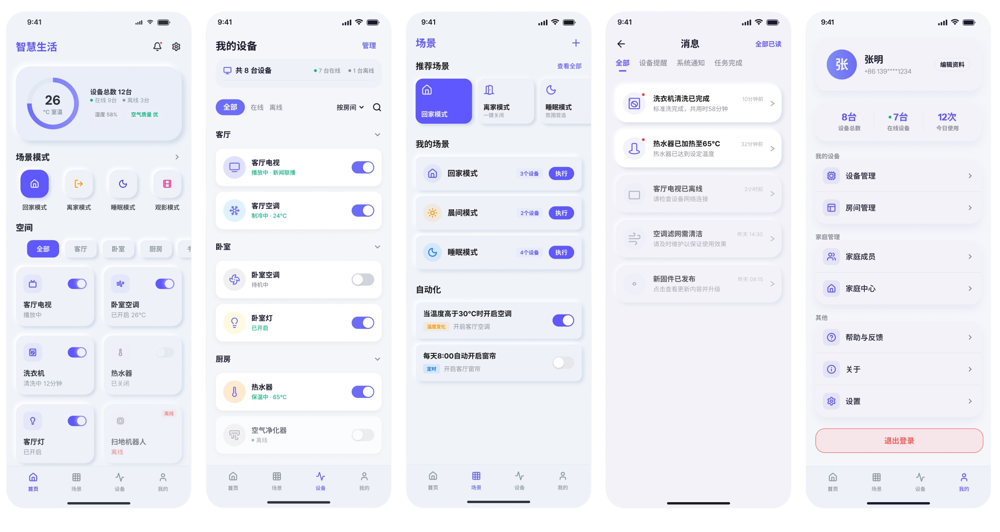
品牌与系统
Design System & Components
视觉语言
与组件系统
极简清新的品牌色： 以荧光绿为主色调，传递健康、环保的视觉心智。
全场景异常组件库： 沉淀超时、密码错误、网络异常等复杂的配网状态组件，保障体验一致性。
卡片式信息层级： 通过大圆角卡片与清晰的留白，降低硬件数据的阅读压力。
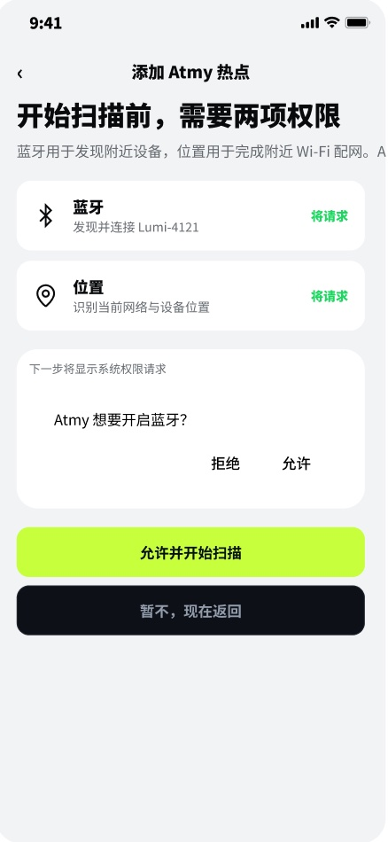
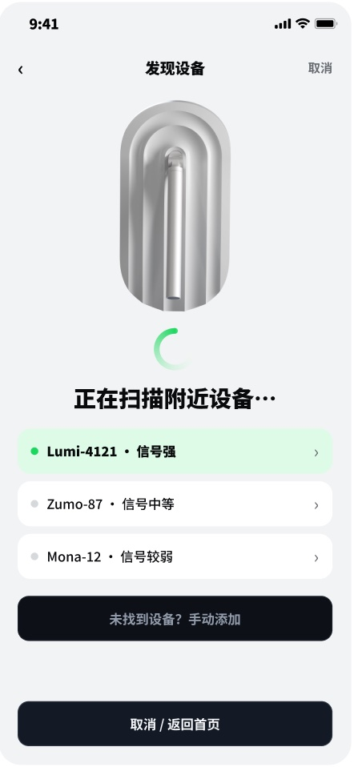
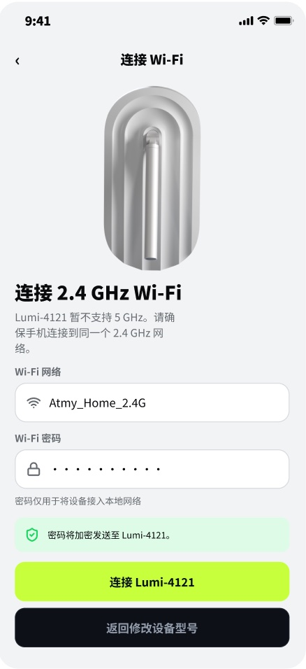
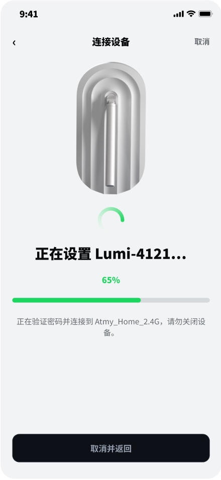
界面交付
界面交付
核心全链路
High-Fidelity UI & Full-Chain Delivery
配网核心流： 权限说明 -> 扫描发现 -> 输入 Wi-Fi -> 连接进度 -> 连接成功。
闭环体验： 设备成功连接后，无缝流转至首页查看实时空气质量与 AI 建议。
数追踪： 提供历史空气数据曲线，支持多维度查询。
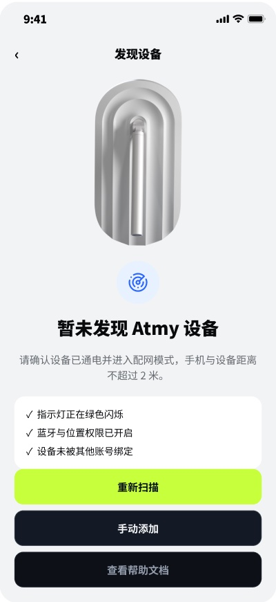
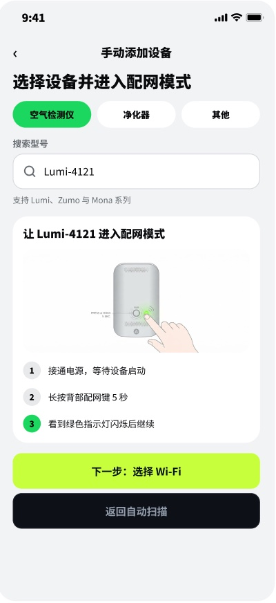
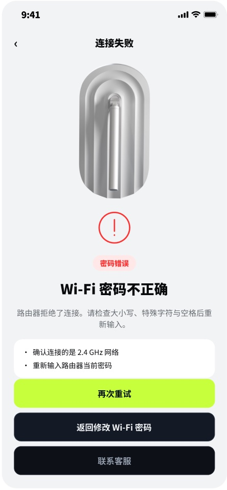
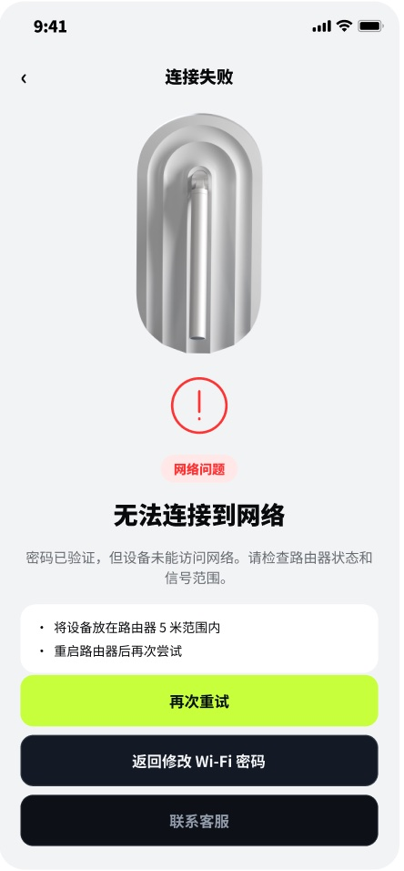
项目复盘
Retrospective & Value Creation
项目复盘
与价值沉淀
降本增效（组件化） ：建立多品类组件化规范，大幅提升新设备的扩展效率与研发交付速度。
体验保障（数据驱动） ：重构核心控制路径，配置误用率降至 2%，首页停留时长增 35%。
系统沉淀（设计资产） ：输出设计规范与组件库，解决多端视觉割裂，支撑日益增多的设备接入。
"用极简的卡片承载复杂的设备，用统一的状态反馈建立安全感，让全屋智能真正触手可及。"
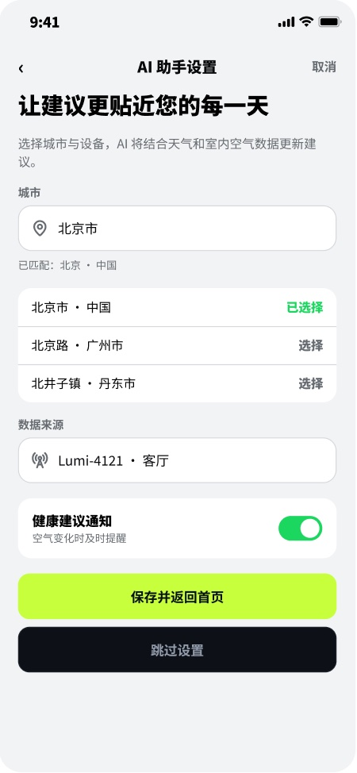
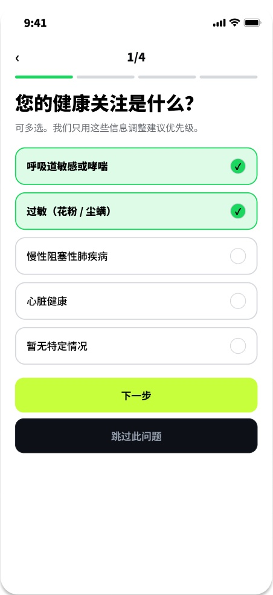
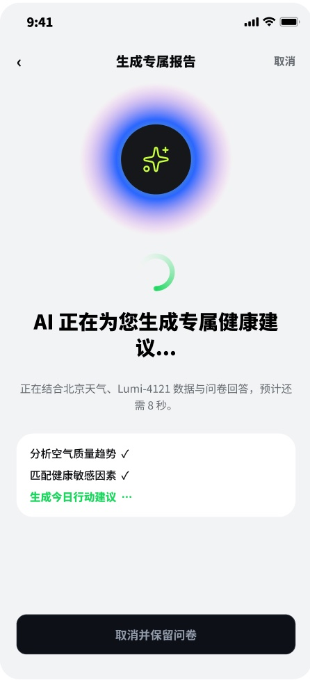
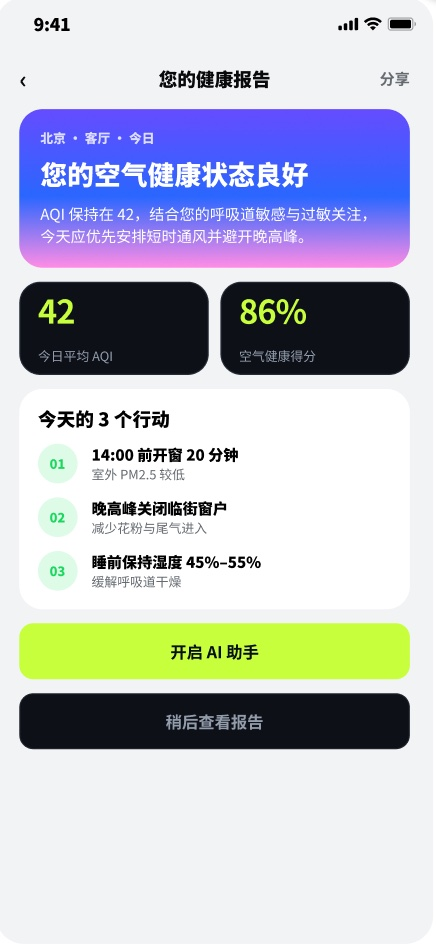